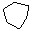

Je vous présente ici la technique de la transformée de Hough.
On commence par une détection de contours. Pour chaque point qui en résulte, on recherche les paramètres de toutes les droites qui peuvent passer par lui. Normalement, il y en a une infinité, mais on se place dans un monde discret pour que ce soit réalisable. On recense donc une liste de paramètres dont certains peuvent apparaître plusieurs fois. Ce sont ceux dont l'occurence est la plus grande qui ont le plus de chance de représenter une droite dans l'image.
Paramétrage d'une droite
Toute droite du plan peut être identifiée de façon unique par deux paramètres :
- R : sa distance à l'origine (0,0).
- A : l'angle qu'elle fait par rapport à un axe.
L'équation de la droite est donc : R = x Cos(A) + y Sin(A)
Il va donc falloir chercher, pour chaque point, l'ensemble des couples (R, A) des droites qui passent par là. Il en existe évidemment une infinité, mais nous allons discrétiser le domaine pour diminuer ce nombre. Pour cela, nous allons, par exemple, seulement détecter les droites dont A est un multiple entier de 10°. Il n'y a ainsi plus que 36 droites possibles par point. Pour chaque point (x,y) et chaque angle A, on peut déterminer facilement R par la formule R = x Cos(A) + y Sin(A).
Déterminer quelle droite passe par un point donné
Pour chaque point, on détermine les valeurs de R pour chacune des 36 valeurs de A. Deux points appartiennent à la même droite s'ils ont en commun un couple (A,R). Pour que ceci soit possible, il faut aussi discrétiser les valeurs de R.
Exemple

L'image ci-contre comporte 32x32 pixels. Voici comment détecter les droites qui se cachent dans les points en noir.
On commence par recenser les coordonnées de chaque point noir. Ensuite, on remplit un tableau pour toutes les valeurs discrètes de R en fonction des 36 valeurs de A (0°, 10°, 20°, ..., 350°).